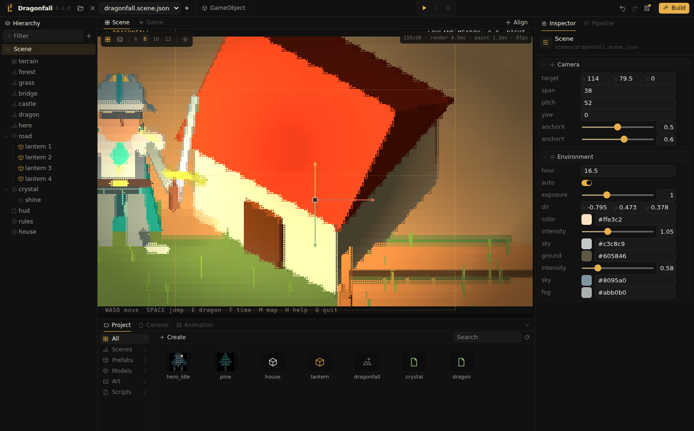

Models
Wavefront .obj models from Blender or other 3D tools are drawn in Braille with lighting, shadows and fog, at any rotation.

Importing
- Export the model as
.obj, with its materials as.mtlif it has any. - Drag the
.objinto the Scene view. It is copied into the open folder together with its.mtlfiles and the textures they name, keeping their relative paths, and placed where it was dropped. - Further instances are created from GameObject, Model, by dragging the model tile from the Project window, or by a double click on it.
What is read
| OBJ / MTL | Used for |
|---|---|
v, f | Positions and faces; faces with more than three corners are split into triangles. |
vt | Texture coordinates. |
usemtl, mtllib | Which material each part uses. |
Kd | The part's color. |
map_Kd | The part's texture, imported as a texture asset. |
Normals in the file are ignored; faces are shaded flat, which reads best at Braille resolution. A few hundred faces are sufficient for a building.
Import settings
Selecting a model tile shows its import settings in the Inspector:
| Setting | Meaning |
|---|---|
upZ | Off for the common Y up export; on for files that are already Z up, as some CAD tools write them. |
scale | World units per file unit. One world unit is one tile of ground; a door is about 2 units tall. |
The model is turned so that its front, as seen in the 3D tool's front view, faces the default camera.
The Mesh component
| Property | Meaning |
|---|---|
model | The model asset. |
material | Optional; replaces the model's own materials on every part that has no material of its own under Parts. |
tint, emissive | Color multiplied over the model, and self lighting. |
twoSided | Draws back faces as well, for open models or models with inconsistent face directions. |
shadow | A soft contact shadow on the ground. |
| Parts | One material slot per part of the model, named after its usemtl, for example eyes. An empty slot keeps the part's own material. |
The object's rotation, scale and flip apply to the model. A solid object blocks with its rotated bounds; a Mesh Collider blocks with the model's outline seen from above, see Physics.
Models with several materials
A character such as a figure with separate textures for its eyes, head and body is one model with several parts. In the 3D tool, each part is assigned its own material, and its faces are unwrapped onto that material's texture; the texture coordinates come with the file, so the engine does not unwrap models. The OBJ file then names each part's material with usemtl, and the MTL file gives that material its texture with map_Kd. Each part is drawn with its own texture and its own texture coordinates.
The Mesh card in the Inspector lists the parts under Parts, one material slot each. A part is drawn with the first of these that is set:
- its slot under Parts;
- the card's
material, which applies to every part; - its texture from the MTL file, tinted by its
Kdcolor; - its
Kdcolor.
Dragging a material from the Project window onto a model in the Scene view fills the slot of the part under the pointer, and a message names the part; dragging it onto a slot in the Inspector works as for any material slot. tint and emissive apply on top of every part. Scripts set a slot by its full name:
local m = find("mario"):component("mesh")
m["parts/eyes"] = "materials/eyes_closed.material.json"